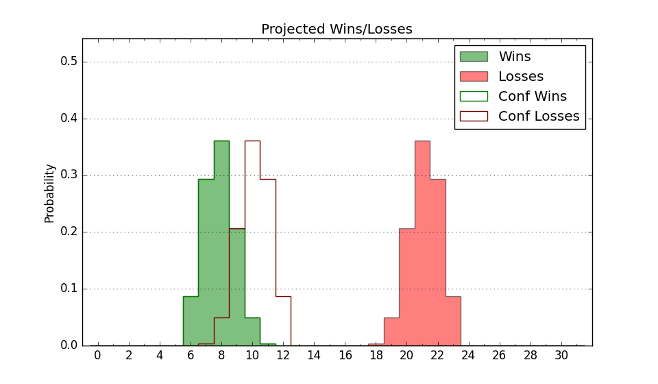

| Home | Game Probabilities | Conferences | Preseason Predictions | Odds Charts | NCAA Tournament |
| City: | Natchitoches, Louisiana | |
| Conference: | Southland (6th)
| |
| Record: | 6-7 (Conf) 6-18 (Overall) | |
| Ratings: | Comp.: -16.6 (325th) Net: -16.6 (325th) Off: 96.5 (311th) Def: 113.1 (325th) SoR: 0.0 (148th) |
| Remaining | ||||||
|---|---|---|---|---|---|---|
| Date | Opponent | Win Prob | Pred. | |||
| 2/19 | @ Tex A&M Corpus Chris (200) | 12.5% | L 64-77 | |||
| 2/24 | @ Houston Baptist (354) | 53.1% | W 75-74 | |||
| 3/2 | Lamar (233) | 38.6% | L 74-77 | |||
| 3/4 | Nicholls St. (266) | 44.5% | L 70-71 | |||
| 3/6 | @ Texas A&M Commerce (328) | 35.5% | L 67-71 | |||
| Previous | Game Score | |||||
| Date | Opponent | Win Prob | Result | Off | Def | Net |
| 11/9 | @Tulane (109) | 5.0% | L 71-88 | -4.3 | 8.5 | 4.2 |
| 11/13 | Stephen F. Austin (167) | 26.6% | L 70-96 | -2.2 | -15.9 | -18.0 |
| 11/16 | (N) Maine (222) | 24.4% | L 65-78 | 1.8 | -12.5 | -10.8 |
| 11/17 | @North Florida (245) | 16.9% | L 74-80 | 1.6 | 2.0 | 3.6 |
| 11/18 | (N) Presbyterian (293) | 38.5% | L 75-78 | 4.6 | -3.7 | 0.9 |
| 11/28 | @Louisiana Monroe (306) | 28.0% | L 70-74 | 2.8 | 5.8 | 8.6 |
| 12/2 | @Baylor (11) | 0.8% | L 40-91 | -29.0 | -0.4 | -29.4 |
| 12/9 | @Southern Miss (243) | 16.6% | L 74-83 | 16.2 | -8.4 | 7.7 |
| 12/12 | @Boise St. (42) | 1.8% | L 54-95 | -0.4 | -24.6 | -25.0 |
| 12/16 | Rice (214) | 36.0% | L 51-76 | -22.9 | -9.4 | -32.3 |
| 12/29 | @LSU (80) | 3.3% | L 55-96 | -18.8 | -6.8 | -25.6 |
| 1/6 | @Lamar (233) | 15.6% | L 70-90 | -1.6 | -7.1 | -8.7 |
| 1/8 | McNeese St. (57) | 7.8% | L 59-68 | -11.7 | 28.0 | 16.3 |
| 1/13 | Incarnate Word (337) | 68.9% | W 97-71 | 24.2 | 5.8 | 30.0 |
| 1/15 | Houston Baptist (354) | 79.4% | W 69-64 | -15.2 | 9.6 | -5.5 |
| 1/20 | @New Orleans (342) | 42.3% | W 92-67 | 26.6 | 16.5 | 43.1 |
| 1/22 | @Southeastern Louisiana (279) | 22.4% | L 62-71 | -7.0 | 7.2 | 0.3 |
| 1/27 | Tex A&M Corpus Chris (200) | 32.8% | L 68-79 | 9.2 | -14.4 | -5.2 |
| 1/29 | @McNeese St. (57) | 2.4% | L 65-89 | 13.6 | -9.9 | 3.7 |
| 2/3 | Texas A&M Commerce (328) | 65.2% | W 70-57 | 7.0 | 10.7 | 17.7 |
| 2/5 | @Nicholls St. (266) | 19.1% | L 66-73 | 16.7 | -11.5 | 5.1 |
| 2/10 | Southeastern Louisiana (279) | 49.6% | L 59-69 | -14.8 | -2.0 | -16.8 |
| 2/12 | New Orleans (342) | 71.4% | W 70-59 | -12.2 | 16.2 | 4.0 |
| 2/17 | @Incarnate Word (337) | 39.4% | W 81-61 | 14.5 | 12.3 | 26.8 |
| Stats & Trends | |||||
|---|---|---|---|---|---|
| Current | Day | Week | Month | Season | |
| Composite | -16.6 | +0.9 | +1.5 | +5.7 | +1.4 |
| Comp Rank | 325 | +7 | +10 | +24 | +26 |
| Net Efficiency | -16.6 | +0.9 | +1.5 | +6.4 | -- |
| Net Rank | 325 | +7 | +9 | +23 | -- |
| Off Efficiency | 96.5 | +0.5 | +0.2 | +3.2 | -- |
| Off Rank | 311 | +4 | +3 | +16 | -- |
| Def Efficiency | 113.1 | +0.5 | +1.3 | +3.1 | -- |
| Def Rank | 325 | +5 | +15 | +27 | -- |
| SoS Rank | 270 | -5 | -22 | -13 | -- |
| Exp. Wins | 7.8 | +0.8 | +1.2 | +2.2 | -2.2 |
| Exp. Conf Wins | 7.8 | +0.8 | +1.2 | +2.2 | -0.2 |
| Conf Champ Prob | 0.0 | -- | -- | -- | -5.1 |

| Advanced Stats | ||
|---|---|---|
| Stat | Value | Rank |
| Off Eff FG % | 0.465 | 300 |
| Off Ast Ratio | 0.115 | 330 |
| Off ORB% | 0.271 | 193 |
| Off TO Rate | 0.164 | 288 |
| Off FT Ratio | 0.341 | 149 |
| Def Eff FG % | 0.545 | 323 |
| Def Ast Ratio | 0.156 | 295 |
| Def ORB% | 0.352 | 353 |
| Def TO Rate | 0.156 | 113 |
| Def FT Ratio | 0.381 | 286 |